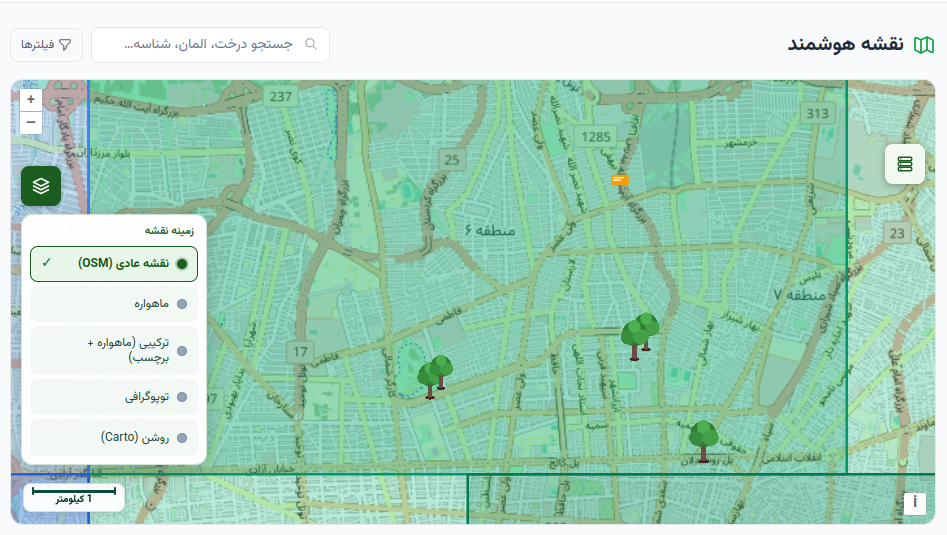
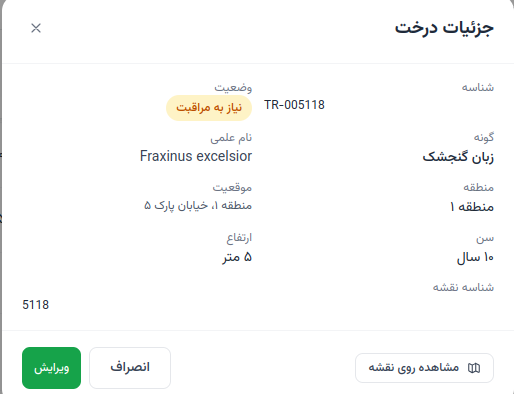
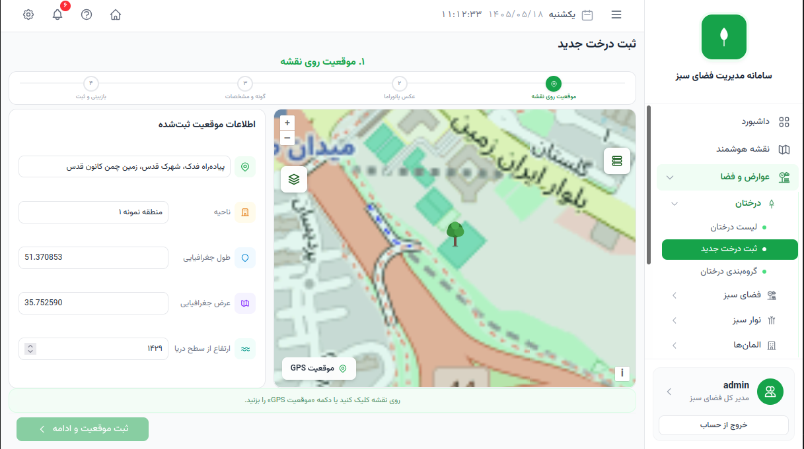
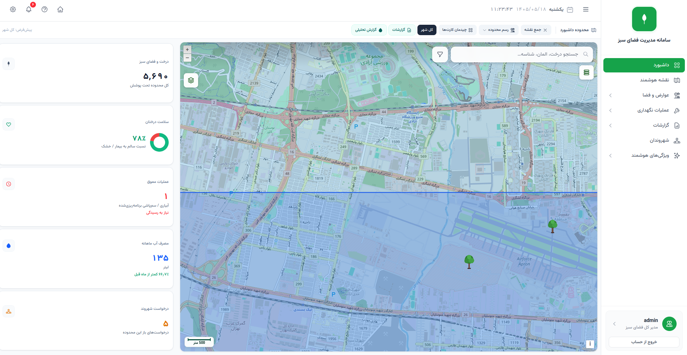

درختان، پارکها، بوستانها، کمربندهای سبز، فضای سبز معابر و تجهیزات شهری، سرمایههایی هستند که کیفیت زندگی شهروندان را میسازند.
کاهش آلودگی هواتعدیل دمای شهرینشاط اجتماعیکیفیت زندگی
فضاهای سبز شهری یکی از ارزشمندترین داراییهای هر شهر محسوب میشوند. درختان، پارکها، بوستانها، کمربندهای سبز، فضای سبز معابر و تجهیزات شهری، علاوه بر زیبایی بصری، نقش مهمی در ارتقای کیفیت زندگی شهروندان، بهبود شرایط زیستمحیطی، کاهش آلودگی هوا، تعدیل دمای شهری و افزایش نشاط اجتماعی ایفا میکنند.
با گسترش شهرها و افزایش حجم داراییهای فضای سبز، مدیریت سنتی این منابع دیگر پاسخگوی نیازهای امروز نیست. نبود بانک اطلاعاتی یکپارچه، دشواری نظارت بر عملیات اجرایی، ثبت غیرمکانمند اطلاعات، نبود گزارشهای مدیریتی دقیق و افزایش هزینههای نگهداری، از مهمترین چالشهایی است که بسیاری از شهرداریها با آن مواجه هستند.
سامانه مدیریت هوشمند فضای سبز با هدف ایجاد یک بستر جامع، یکپارچه و هوشمند برای مدیریت تمامی اطلاعات، عملیات و فرآیندهای مرتبط با فضای سبز شهری طراحی شده است. این سامانه با بهرهگیری از فناوریهای مبتنی بر نقشه (GIS)، مدیریت اطلاعات مکانی، ثبت عملیات میدانی، داشبوردهای مدیریتی، گزارشهای تحلیلی و ابزارهای نظارتی، امکان مدیریت دقیق تمامی داراییهای فضای سبز را در یک محیط متمرکز فراهم میکند.
در این سامانه، هر درخت، هر فضای سبز و هر تجهیز شهری دارای هویت مشخص، موقعیت مکانی دقیق و پرونده الکترونیکی اختصاصی است.
تمامی فعالیتهای انجامشده بر روی هر دارایی، از زمان ثبت اولیه تا عملیات نگهداری، آبیاری، هرس، کوددهی، سمپاشی، رسیدگی به درخواستهای مردمی و سایر اقدامات اجرایی، به صورت مستند ثبت شده و در هر زمان قابل مشاهده و تحلیل خواهد بود.
سامانه مدیریت هوشمند فضای سبز تنها یک نرمافزار ثبت اطلاعات نیست؛ بلکه بستری برای تصمیمگیری مبتنی بر داده است. مدیران شهری میتوانند با استفاده از اطلاعات لحظهای، گزارشهای تحلیلی و داشبوردهای مدیریتی، وضعیت فضای سبز شهر را به صورت دقیق پایش کرده، عملکرد پیمانکاران را ارزیابی نموده، منابع را بهینه تخصیص داده و برنامهریزی مؤثرتری برای نگهداری و توسعه فضای سبز انجام دهند.
از سوی دیگر، کارشناسان و نیروهای اجرایی نیز بدون نیاز به فرمهای کاغذی و فرآیندهای زمانبر، تمامی عملیات روزانه خود را مستقیماً بر روی نقشه ثبت کرده و اطلاعات را به صورت برخط در اختیار مدیران قرار میدهند. این موضوع علاوه بر افزایش سرعت انجام عملیات، موجب ارتقای شفافیت، کاهش خطاهای انسانی و ایجاد مستندات دقیق از تمامی فعالیتهای انجامشده خواهد شد.
معماری سامانه به گونهای طراحی شده است که قابلیت توسعه و افزودن امکانات جدید را در آینده نیز داشته باشد. این ویژگی امکان همگامسازی سامانه با نیازهای در حال تغییر شهرداریها، توسعه خدمات هوشمند و بهرهگیری از فناوریهای نوین را فراهم میکند.
سامانه مدیریت هوشمند فضای سبز، با ایجاد یک بانک اطلاعاتی جامع از تمامی داراییهای فضای سبز و یکپارچهسازی فرآیندهای مدیریتی، اجرایی و نظارتی، بستری مطمئن برای مدیریت علمی، دقیق و هوشمند فضای سبز شهری فراهم میآورد.
فضای سبز؛ سرمایهای که باید دیده، ثبت و مدیریت شود
۰۲
فصل دوم
ضرورت استفاده از سامانه مدیریت هوشمند فضای سبز
مدیریت فضای سبز؛ فراتر از نگهداری روزمره
فضای سبز شهری تنها مجموعهای از درختان، پارکها و بوستانها نیست، بلکه بخشی از سرمایههای ارزشمند هر شهر محسوب میشود. حفظ سلامت این سرمایه، مدیریت صحیح منابع آبی، افزایش طول عمر درختان، بهبود کیفیت محیط زیست و ارتقای رضایت شهروندان، نیازمند تصمیمگیری دقیق و مبتنی بر اطلاعات است.
در بسیاری از شهرداریها، اطلاعات مربوط به درختان، فضاهای سبز، تجهیزات پارکی و عملیات اجرایی در سامانههای مختلف، فایلهای پراکنده یا حتی فرمهای کاغذی نگهداری میشود. این پراکندگی اطلاعات، علاوه بر افزایش احتمال خطا، امکان نظارت دقیق، برنامهریزی بلندمدت و تصمیمگیری هوشمند را با چالش مواجه میکند.
از سوی دیگر، افزایش هزینههای نگهداری فضای سبز، محدودیت منابع آبی، گستردگی سطح شهر، تنوع گونههای گیاهی، تعدد پیمانکاران و افزایش انتظارات شهروندان، مدیریت فضای سبز را به یکی از پیچیدهترین حوزههای مدیریت شهری تبدیل کرده است.
در چنین شرایطی، بهرهگیری از یک سامانه جامع و یکپارچه، دیگر یک انتخاب نیست؛ بلکه ضرورتی برای مدیریت علمی و پایدار فضای سبز شهری به شمار میآید.
چالشهای رایج مدیریت فضای سبز
۰۱
نبود بانک اطلاعاتی متمرکز
در بسیاری از سازمانها اطلاعات درختان، بوستانها، تجهیزات و عملیات اجرایی به صورت پراکنده نگهداری میشود. این موضوع باعث میشود دسترسی به اطلاعات دقیق و بهروز دشوار بوده و امکان تحلیل جامع وضعیت فضای سبز شهر وجود نداشته باشد.
۰۲
دشواری نظارت بر عملیات اجرایی
عملیاتی مانند آبیاری، هرس، کوددهی، سمپاشی، کاشت نهال و سایر فعالیتهای نگهداری، معمولاً توسط پیمانکاران یا نیروهای اجرایی انجام میشود. در صورت نبود سامانه متمرکز، بررسی کیفیت، زمان و محل انجام عملیات به فرآیندی زمانبر و وابسته به گزارشهای دستی تبدیل خواهد شد.
۰۳
نبود اطلاعات مکانی دقیق
مدیریت فضای سبز بدون نقشه دقیق، عملاً امکان برنامهریزی اصولی را از مدیران سلب میکند. زمانی که موقعیت دقیق هر درخت، فضای سبز یا تجهیزات شهری مشخص نباشد، انجام عملیات، تخصیص منابع و پاسخگویی به درخواستهای مردمی با دشواری همراه خواهد بود.
۰۴
افزایش هزینههای نگهداری
ثبت ناقص اطلاعات، انجام عملیات تکراری، برنامهریزی غیرهدفمند و نبود گزارشهای مدیریتی، موجب افزایش هزینههای نگهداری و کاهش بهرهوری منابع انسانی و مالی میشود.
۰۵
نبود گزارشهای تحلیلی
مدیران شهری برای تصمیمگیری صحیح نیازمند اطلاعات دقیق و بهروز هستند. بدون وجود داشبوردهای مدیریتی و گزارشهای تحلیلی، ارزیابی وضعیت سلامت درختان، میزان مصرف آب، عملکرد پیمانکاران یا روند نگهداری فضای سبز به سادگی امکانپذیر نیست.
۰۶
دشواری پاسخگویی به شهروندان
امروزه شهروندان انتظار دارند مشکلات فضای سبز، از جمله خشکیدگی درختان، آسیب تجهیزات، آفات یا نیاز به هرس، در کوتاهترین زمان ممکن بررسی و رسیدگی شود. نبود ارتباط میان سامانههای داخلی شهرداری و سامانههای ارتباط مردمی، روند پاسخگویی را با تأخیر مواجه میکند.
راهکار جامع
پاسخ سامانه به این چالشها
سامانه مدیریت هوشمند فضای سبز با هدف رفع این چالشها طراحی شده است.
این سامانه تمامی اطلاعات مرتبط با فضای سبز شهر را در یک بستر یکپارچه گردآوری میکند و امکان مدیریت، پایش، برنامهریزی و تحلیل را از طریق یک محیط مبتنی بر نقشه فراهم میسازد.
در این سامانه، هر درخت، هر فضای سبز و هر تجهیز شهری دارای هویت مشخص و موقعیت مکانی دقیق است. تمامی عملیات انجامشده، سوابق نگهداری، تصاویر، اطلاعات تخصصی و گزارشهای مرتبط در پرونده الکترونیکی همان دارایی ثبت شده و در هر زمان قابل مشاهده خواهد بود.
بدین ترتیب، تمامی ذینفعان شامل مدیران، کارشناسان، پیمانکاران و واحدهای نظارتی، به اطلاعاتی یکسان، دقیق و بهروز دسترسی خواهند داشت.
ارزشآفرینی سامانه برای شهرداری
پیادهسازی سامانه مدیریت هوشمند فضای سبز، مزایای متعددی را برای مدیریت شهری به همراه خواهد داشت که مهمترین آنها عبارتاند از:
ایجاد بانک اطلاعاتی جامع و یکپارچه از تمامی داراییهای فضای سبز شهر
مدیریت متمرکز اطلاعات مکانی و توصیفی
افزایش شفافیت در اجرای عملیات و عملکرد پیمانکاران
کاهش هزینههای نگهداری از طریق برنامهریزی دقیقتر
بهینهسازی مصرف منابع، بهویژه آب
تسهیل نظارت و کنترل فرآیندهای اجرایی
ارائه گزارشهای مدیریتی و تحلیلی برای تصمیمگیری مبتنی بر داده
مستندسازی کامل تمامی عملیات انجامشده
افزایش سرعت پاسخگویی به درخواستهای شهروندان
ایجاد زیرساخت مناسب برای توسعه خدمات هوشمند در آینده
چشمانداز سامانه
سامانه مدیریت هوشمند فضای سبز، تنها ابزاری برای ثبت اطلاعات نیست؛ بلکه بستری برای مدیریت دانش، تصمیمسازی و توسعه پایدار فضای سبز شهری است.
با یکپارچهسازی اطلاعات، عملیات و فرآیندهای مدیریتی، این سامانه به مدیران شهری کمک میکند تا با اتکا به دادههای دقیق، برنامهریزی مؤثرتری انجام داده، منابع را بهینه مصرف کنند و کیفیت خدمات ارائهشده به شهروندان را ارتقا دهند.
این رویکرد، علاوه بر افزایش بهرهوری سازمان، زمینهساز ایجاد شهری هوشمندتر، پایدارتر و برخوردار از فضای سبزی سالم، ایمن و ماندگار خواهد بود.
۰۳
فصل سوم
نقشه هوشمند؛ قلب تپنده سامانه
مدیریت فضای سبز از دریچه نقشه
تمامی فعالیتهای مرتبط با فضای سبز شهری، در نهایت به یک موقعیت جغرافیایی وابسته هستند. هر درخت، هر پارک، هر فضای سبز، هر نیمکت، هر آبنما و هر تجهیز شهری در نقطهای مشخص از شهر قرار دارد و تمامی عملیات نگهداری نیز در همان نقطه انجام میشود.
به همین دلیل، نقشه هوشمند به عنوان هسته اصلی سامانه مدیریت هوشمند فضای سبز طراحی شده است؛ محیطی که تمامی اطلاعات مکانی و توصیفی داراییهای فضای سبز را در یک نمای یکپارچه در اختیار مدیران، کارشناسان و نیروهای اجرایی قرار میدهد.
در این سامانه، نقشه صرفاً یک ابزار نمایش نیست؛ بلکه بستری برای مدیریت، تحلیل، برنامهریزی و تصمیمگیری است.
مشاهده یکپارچه تمامی داراییهای فضای سبز
سامانه این امکان را فراهم میکند که تمامی داراییهای مرتبط با فضای سبز شهری بر روی نقشه مشاهده شوند. این داراییها شامل موارد زیر هستند:
درختانبوستانها و پارکهاچمنکاریهانوارهای سبزباغچههانیمکتهاآبنماهاتجهیزات بازیشیرآلاتسطلهای زبالهساختمانها و سایر تجهیزات شهری
هر یک از این داراییها با نماد اختصاصی خود بر روی نقشه نمایش داده میشوند تا کاربران بتوانند در کوتاهترین زمان ممکن وضعیت شهر را مشاهده و تحلیل کنند.
نمایش هوشمند لایههای اطلاعاتی
یکی از مهمترین قابلیتهای سامانه، مدیریت لایههای اطلاعاتی است. کاربر میتواند تنها با چند کلیک، هر لایه را فعال یا غیرفعال کند و متناسب با نیاز خود، تنها اطلاعات موردنظر را مشاهده نماید. (لایهها را امتحان کنید)
برای مثال، کاربر میتواند فقط درختان را مشاهده کند، فقط پارکها را نمایش دهد، تجهیزات شهری را بررسی کند، وضعیت نوارهای سبز را مشاهده نماید، یا تمامی اطلاعات را به صورت همزمان در اختیار داشته باشد.
این قابلیت موجب افزایش سرعت تحلیل اطلاعات و کاهش پیچیدگی نمایش دادهها خواهد شد.
سامانه مدیریت هوشمند فضای سبز — نقشه هوشمند

نمای واقعی سامانه: نقشه هوشمند با لایههای اطلاعاتی
انتخاب بهترین نقشه متناسب با نیاز کاربران
سامانه از انواع مختلف نقشه پایه پشتیبانی میکند تا کاربران بتوانند متناسب با نوع فعالیت خود، بهترین نمای نقشه را انتخاب کنند. این تنوع، امکان بررسی دقیق وضعیت فضای سبز در شرایط مختلف را فراهم میسازد.
نقشه استاندارد شهری
پرونده الکترونیکی برای هر درخت
پرونده درخت #۱۰۴۲۳
وضعیت سلامت: سالم
چنار شرقی · Platanus orientalis
تاریخ کاشت۱۳۸۵
سن تقریبی۲۰ سال
ارتفاع۱۲ متر
قطر تنه۴۸ سانتیمتر
قطر تاج۷ متر
موقعیتبلواری — منطقه ۳
هر درخت موجود در شهر دارای یک شناسه یکتا و پرونده الکترونیکی اختصاصی است. با انتخاب هر درخت بر روی نقشه، تمامی اطلاعات مربوط به آن در اختیار کاربر قرار میگیرد؛ از جمله:
گونه درخت
مشخصات علمی
تاریخ کاشت
سن تقریبی
ارتفاع
قطر تنه
قطر تاج
وضعیت سلامت
تصاویر ثبتشده
سوابق عملیات انجامشده
گزارشهای ثبتشده
موقعیت دقیق مکانی
بدین ترتیب، هر درخت به یک دارایی دیجیتال تبدیل میشود که تمامی اطلاعات آن در طول عمر درخت قابل مشاهده و رهگیری خواهد بود.
سامانه مدیریت هوشمند فضای سبز — پرونده درخت

نمای واقعی سامانه: پرونده الکترونیکی و مشخصات هر درخت
نمایش وضعیت فضاهای سبز
علاوه بر درختان، تمامی فضاهای سبز نیز به صورت محدودههای مکانی بر روی نقشه نمایش داده میشوند. هر فضای سبز دارای اطلاعات اختصاصی خود است؛ از جمله:
مساحت
موقعیت جغرافیایی
تجهیزات موجود
وضعیت نگهداری
عملیات انجامشده
سوابق بازدید
اطلاعات مدیریتی
این اطلاعات به مدیران کمک میکند تا وضعیت هر پارک یا فضای سبز را به صورت مستقل ارزیابی و مدیریت کنند.
نمایش سهبعدی اطلاعات درختان
به منظور درک بهتر وضعیت درختان، سامانه امکان نمایش نمای ساده سهبعدی از ساختار درخت را نیز فراهم کرده است. این قابلیت با استفاده از اطلاعات ثبتشده نظیر ارتفاع و قطر تاج، تصویری مناسب از وضعیت کلی درخت ارائه میدهد و به کارشناسان در ارزیابی وضعیت فضای سبز کمک میکند.
جستجوی سریع اطلاعات
در شهرهای بزرگ، جستجوی دستی میان هزاران درخت یا دهها پارک عملاً امکانپذیر نیست. سامانه با ارائه ابزار جستجوی پیشرفته، امکان دسترسی سریع به اطلاعات را فراهم میکند.
کاربران میتوانند داراییهای موردنظر را بر اساس معیارهایی جستجو کرده و مستقیماً به موقعیت آنها بر روی نقشه هدایت شوند.
جستجوی دارایی…
شناسهگونهمنطقهآدرسسایر اطلاعات ثبتشده
مدیریت اطلاعات بر اساس موقعیت مکانی
یکی از مهمترین مزایای سامانه، ارتباط مستقیم تمامی اطلاعات با موقعیت جغرافیایی است. تمامی عملیات انجامشده، تصاویر، گزارشها، سوابق نگهداری و اطلاعات تخصصی، به همان نقطه روی نقشه متصل هستند.
در نتیجه، کاربران دیگر نیازی به جستجو در میان فایلها، فرمهای کاغذی یا گزارشهای متعدد نخواهند داشت؛ بلکه تمامی اطلاعات مرتبط با هر دارایی تنها با انتخاب آن بر روی نقشه در دسترس خواهد بود.
مزایای نقشه هوشمند برای مدیران
مشاهده لحظهای وضعیت فضای سبز شهر
دسترسی سریع به اطلاعات مکانی و توصیفی
مدیریت آسان داراییهای شهری
تسهیل برنامهریزی عملیات اجرایی
کاهش زمان جستجوی اطلاعات
افزایش دقت در تصمیمگیری
نظارت بهتر بر عملکرد پیمانکاران
امکان تحلیل وضعیت مناطق مختلف شهر
ایجاد بانک اطلاعات مکانی یکپارچه
پایهای برای توسعه شهر هوشمند
نقشه هوشمند، تنها ابزاری برای نمایش اطلاعات نیست؛ بلکه زیرساخت اصلی توسعه خدمات هوشمند در حوزه فضای سبز محسوب میشود.
تمرکز تمامی اطلاعات مکانی در یک سامانه، این امکان را فراهم میکند که در آینده خدمات پیشرفتهتری مانند تحلیلهای هوشمند، مدیریت بهینه منابع، پایش تغییرات فضای سبز، ارتباط با سایر سامانههای شهری و توسعه خدمات مبتنی بر داده، بر بستر همین نقشه ارائه شوند.
به همین دلیل، نقشه هوشمند را میتوان مهمترین بخش سامانه مدیریت هوشمند فضای سبز و نقطه آغاز مدیریت علمی و یکپارچه داراییهای سبز شهری دانست.
۰۴
فصل چهارم
مدیریت داراییهای شهری و ایجاد بانک اطلاعاتی فضای سبز
هر دارایی، یک هویت دیجیتال
یکی از مهمترین چالشهای مدیریت فضای سبز در شهرهای بزرگ، نبود اطلاعات دقیق و یکپارچه از داراییهای موجود است. در بسیاری از موارد، اطلاعات مربوط به درختان، پارکها، تجهیزات و سایر اجزای فضای سبز در فایلهای مختلف، فرمهای کاغذی یا حافظه افراد نگهداری میشود و با جابهجایی نیروها یا گذشت زمان، بخش قابل توجهی از این اطلاعات از بین میرود.
سامانه مدیریت هوشمند فضای سبز با ایجاد یک بانک اطلاعاتی جامع، تمامی داراییهای مرتبط با فضای سبز را به موجودیتهایی دارای هویت دیجیتال تبدیل میکند. هر دارایی دارای شناسه یکتا، موقعیت مکانی مشخص، اطلاعات تخصصی و سوابق کامل فعالیتها خواهد بود و در طول چرخه عمر خود قابل رهگیری است.
ثبت درختان با اطلاعات کامل
درختان اصلیترین سرمایههای فضای سبز شهری هستند و مدیریت صحیح آنها نیازمند اطلاعات دقیق و مستند است. در این سامانه، فرآیند ثبت هر درخت به گونهای طراحی شده است که تمامی اطلاعات ضروری در همان ابتدای کار ثبت و در آینده نیز قابل بهروزرسانی باشد. برای هر درخت میتوان اطلاعاتی مانند موارد زیر را در پرونده الکترونیکی آن ذخیره کرد:
گونه و نام علمی
تاریخ کاشت
ارتفاع
قطر تنه
قطر تاج
وضعیت سلامت
تصاویر ثبتشده
موقعیت دقیق جغرافیایی
سوابق عملیات نگهداری
به این ترتیب، هر درخت از لحظه کاشت تا پایان چرخه عمر خود دارای شناسنامهای کامل و قابل استناد خواهد بود.
ثبت اطلاعات به صورت مستقیم روی نقشه
تمامی اطلاعات پایه مستقیماً بر روی نقشه ثبت میشوند. کارشناس یا اپراتور پس از انتخاب موقعیت موردنظر، اطلاعات مربوط به درخت یا فضای سبز را تکمیل کرده و سامانه به صورت خودکار آن را در بانک اطلاعاتی ذخیره میکند.
این روش علاوه بر افزایش سرعت ثبت اطلاعات، احتمال خطا در تعیین موقعیت مکانی را نیز به حداقل میرساند.
استانداردسازی اطلاعات
یکی از مهمترین ویژگیهای سامانه، استفاده از کدینگهای استاندارد است. به جای ثبت اطلاعات به صورت سلیقهای، تمامی کاربران از فهرستهای استاندارد و از پیش تعریفشده استفاده میکنند. این موضوع موجب میشود:
اطلاعات یکنواخت ثبت شوند.
گزارشها دقیقتر باشند.
تحلیل دادهها امکانپذیر شود.
احتمال بروز خطاهای انسانی کاهش یابد.
سامانه مدیریت هوشمند فضای سبز — ثبت درخت

نمای واقعی سامانه: فرم ثبت درخت و ثبت موقعیت روی نقشه
پرونده الکترونیکی داراییها
هر دارایی ثبتشده در سامانه دارای پرونده اختصاصی است. این پرونده تنها شامل اطلاعات اولیه نیست؛ بلکه تمامی رویدادهای مرتبط با آن نیز در طول زمان به پرونده اضافه میشود. برای مثال، مدیر یا کارشناس میتواند سوابق زیر را مشاهده کند:
در نتیجه، تاریخچه کامل هر دارایی در یک محل متمرکز نگهداری میشود.
تاریخهای آبیاری
عملیات هرس
سمپاشی
کوددهی
تغییر وضعیت سلامت
تصاویر قبل و بعد از عملیات
گزارشهای کارشناسی
درخواستهای ثبتشده توسط شهروندان
اقدامات انجامشده
مدیریت گونههای گیاهی
یکی از قابلیتهای مهم سامانه، مدیریت بانک اطلاعات گونههای گیاهی است. برای هر گونه درخت، اطلاعات تخصصی به صورت متمرکز تعریف میشود تا هنگام ثبت درخت جدید، کاربران تنها گونه موردنظر را انتخاب کنند و بخش زیادی از اطلاعات به صورت خودکار در اختیار آنان قرار گیرد. این اطلاعات میتواند شامل موارد زیر باشد:
نام فارسی
نام علمی
شرایط اقلیمی مناسب
نوع خاک
نیاز آبی
دوره آبیاری
کودهای مناسب
سموم پیشنهادی
آفات و بیماریهای رایج
میانگین طول عمر گونه
وجود این بانک اطلاعاتی موجب یکپارچگی اطلاعات، کاهش خطا و استانداردسازی فرآیند ثبت اطلاعات خواهد شد.
مدیریت مناطق شهری
ساختار مدیریت فضای سبز در اغلب شهرداریها بر اساس مناطق جغرافیایی انجام میشود. سامانه این امکان را فراهم میکند که محدوده هر منطقه به صورت دقیق بر روی نقشه تعریف شود.
پس از تعریف مناطق، تمامی داراییها، عملیات، گزارشها و درخواستهای مردمی بر اساس همان محدودهها مدیریت میشوند.
این ویژگی باعث میشود هر مدیر منطقه تنها اطلاعات حوزه مسئولیت خود را مشاهده و مدیریت کند، در حالی که مدیران ارشد به اطلاعات کل شهر دسترسی خواهند داشت.
مدیریت تجهیزات و المانهای شهری
فضای سبز تنها شامل درختان نیست. در هر پارک یا فضای سبز، تجهیزات متعددی وجود دارد که نگهداری صحیح آنها نیز اهمیت فراوانی دارد. سامانه امکان ثبت و مدیریت انواع تجهیزات را فراهم میکند:
نیمکتهاآبنماهاتجهیزات بازی کودکانشیرآلاتسطلهای زبالهساختمانهاتابلوهای هشدارسایر تجهیزات شهری
هر یک از این تجهیزات دارای موقعیت مکانی، مشخصات فنی، وضعیت بهرهبرداری و سوابق نگهداری خواهد بود.
یک بانک اطلاعاتی برای آینده
بانک اطلاعاتی ایجادشده در سامانه، تنها برای استفاده روزمره طراحی نشده است. با گذشت زمان و افزایش حجم اطلاعات، این بانک به یکی از ارزشمندترین منابع اطلاعاتی شهرداری تبدیل خواهد شد.
مدیران میتوانند روند رشد فضای سبز، وضعیت سلامت گونهها، عملکرد پیمانکاران، میزان توسعه مناطق مختلف و بسیاری از شاخصهای مدیریتی را بر اساس دادههای واقعی تحلیل و برنامهریزی کنند.
مزایای مدیریت داراییهای شهری
پیادهسازی این بخش از سامانه، مزایای متعددی برای شهرداری به همراه دارد، از جمله:
ایجاد شناسنامه دیجیتال برای تمامی داراییهای فضای سبز
حذف اطلاعات پراکنده و ایجاد بانک اطلاعاتی متمرکز
افزایش دقت در ثبت اطلاعات
دسترسی سریع به سوابق هر دارایی
استانداردسازی اطلاعات در سطح کل سازمان
تسهیل مدیریت مناطق شهری
افزایش سرعت تصمیمگیری
کاهش خطاهای انسانی
ایجاد زیرساخت مناسب برای تحلیلهای مدیریتی و برنامهریزی بلندمدت
سامانه مدیریت هوشمند فضای سبز با تبدیل تمامی داراییهای شهری به اطلاعات ساختاریافته، زمینه را برای مدیریت علمی، مستندسازی کامل و تصمیمگیری مبتنی بر داده فراهم میکند؛ رویکردی که در نهایت به افزایش بهرهوری، کاهش هزینهها و حفظ بهتر سرمایههای سبز شهر منجر خواهد شد.
۰۵
فصل پنجم
مدیریت عملیات نگهداری و نظارت بر عملکرد پیمانکاران
مدیریت هوشمند عملیات؛ از برنامهریزی تا مستندسازی
نگهداری فضای سبز، مجموعهای از عملیات مستمر و تخصصی است که کیفیت اجرای آن تأثیر مستقیمی بر سلامت درختان، زیبایی محیط شهری، میزان مصرف منابع و هزینههای شهرداری دارد.
عملیاتی نظیر آبیاری، هرس، کوددهی، سمپاشی، کاشت نهال و سایر اقدامات نگهداری، اگر بدون برنامهریزی، مستندسازی و نظارت انجام شوند، علاوه بر افزایش هزینهها، موجب کاهش کیفیت فضای سبز و اتلاف منابع خواهند شد.
سامانه مدیریت هوشمند فضای سبز با ایجاد بستری یکپارچه برای ثبت، مدیریت و پایش تمامی عملیات اجرایی، امکان کنترل کامل فرآیندهای نگهداری را در اختیار مدیران قرار میدهد.
ثبت تمامی عملیات در محل اجرای کار
یکی از مهمترین ویژگیهای سامانه، ثبت عملیات دقیقاً در محل انجام فعالیت است. کاربران میتوانند در زمان اجرای عملیات، مستقیماً از طریق نقشه و با انتخاب درخت یا فضای سبز موردنظر، اطلاعات مربوط به فعالیت انجامشده را ثبت کنند.
در نتیجه، تمامی اطلاعات به همان دارایی متصل شده و برای همیشه در پرونده الکترونیکی آن نگهداری خواهد شد.
مدیریت چرخه کامل عملیات نگهداری
سامانه از تمامی عملیات اصلی نگهداری فضای سبز پشتیبانی میکند و برای هر نوع عملیات، اطلاعات تخصصی موردنیاز را ثبت میکند.
💧
آبیاری
در عملیات آبیاری، اطلاعاتی مانند زمان انجام، روش آبیاری، میزان آب مصرفی و تصاویر مستند ثبت میشود.
ثبت این اطلاعات به مدیران کمک میکند تا میزان مصرف آب را کنترل کرده، برنامههای آبیاری را ارزیابی کنند و از اجرای صحیح عملیات اطمینان حاصل نمایند.
🧪
سمپاشی
تمامی اطلاعات مربوط به سمپاشی از جمله نوع سم، مقدار مصرف، روش اجرا، زمان عملیات و مستندات تصویری در سامانه ثبت میشود.
این اطلاعات علاوه بر ایجاد سابقه برای هر درخت، امکان تحلیل وضعیت بیماریها و ارزیابی اثربخشی عملیات را نیز فراهم میکند.
✂️
هرس
سامانه امکان ثبت کامل عملیات هرس را فراهم کرده است.
کاربران میتوانند نوع هرس، علت انجام آن، شدت عملیات و تصاویر قبل و بعد از اجرا را ثبت کنند تا تمامی سوابق نگهداری در پرونده درخت باقی بماند.
🌱
کوددهی
ثبت نوع کود، میزان مصرف، روش استفاده و تاریخ اجرای عملیات، موجب میشود برنامه تغذیه گیاهان به صورت دقیق مستندسازی شده و در دورههای بعدی نیز قابل پیگیری باشد.
🌳
کاشت نهال
از زمان کاشت هر نهال، اطلاعات مربوط به گونه، تعداد، محل کاشت و تصاویر اولیه ثبت شده و از همان لحظه، پرونده الکترونیکی آن در سامانه ایجاد میشود.
تمامی عملیات انجامشده به همراه اطلاعات تکمیلی در سامانه نگهداری میشود. این مستندات میتواند شامل موارد زیر باشد:
تاریخ و ساعت انجام عملیات
کاربر یا پیمانکار مجری
موقعیت مکانی
تصاویر قبل و بعد
توضیحات کارشناسی
اطلاعات تخصصی هر عملیات
وجود این مستندات، امکان بررسی دقیق عملکرد، پاسخگویی به واحدهای نظارتی و مستندسازی فعالیتهای انجامشده را فراهم میکند.
افزایش شفافیت در عملکرد پیمانکاران
یکی از مهمترین دغدغههای مدیران فضای سبز، ارزیابی عملکرد پیمانکاران است. در سامانه مدیریت هوشمند فضای سبز، تمامی فعالیتهای ثبتشده به پیمانکار یا اپراتور مربوطه منتسب میشود. در نتیجه، مدیران میتوانند به سادگی مشاهده کنند:
چه عملیاتی انجام شده است.
عملیات در چه زمانی انجام شده است.
عملیات در کدام نقطه انجام شده است.
چه میزان منابع مصرف شده است.
عملیات توسط چه شخص یا پیمانکاری اجرا شده است.
این شفافیت، ارزیابی عملکرد را سادهتر و دقیقتر میکند.
حذف گزارشهای کاغذی
در بسیاری از فرآیندهای سنتی، اطلاعات عملیات پس از پایان کار و بر اساس فرمهای کاغذی یا فایلهای جداگانه ثبت میشود. این روش علاوه بر اتلاف زمان، احتمال بروز خطا، فراموشی یا ثبت ناقص اطلاعات را افزایش میدهد.
سامانه مدیریت هوشمند فضای سبز با ثبت مستقیم اطلاعات در محل اجرا، نیاز به این فرآیندهای سنتی را حذف کرده و تمامی اطلاعات را به صورت دیجیتال نگهداری میکند.
برنامهریزی بهتر عملیات
با تجمیع اطلاعات عملیات انجامشده، مدیران میتوانند وضعیت نگهداری هر منطقه را ارزیابی کرده و برنامهریزی دقیقتری برای فعالیتهای آینده انجام دهند. به عنوان مثال، امکان بررسی موارد زیر فراهم خواهد بود:
آخرین زمان آبیاری هر درخت
دفعات هرس انجامشده
سوابق سمپاشی
وضعیت تغذیه گیاه
عملیات معوق
نیازهای آینده هر منطقه
این اطلاعات، تصمیمگیری را از حالت تجربی خارج کرده و مبتنی بر دادههای واقعی میسازد.
کنترل کیفیت خدمات
سامانه تنها محلی برای ثبت عملیات نیست؛ بلکه ابزاری برای کنترل کیفیت خدمات نیز محسوب میشود.
مدیران میتوانند با بررسی تصاویر، سوابق ثبتشده و اطلاعات عملیات، کیفیت اجرای فعالیتها را ارزیابی کرده و در صورت نیاز اقدامات اصلاحی را برنامهریزی کنند. این موضوع نقش مهمی در افزایش کیفیت خدمات شهری و ارتقای سطح نگهداری فضای سبز خواهد داشت.
مزایای مدیریت عملیات نگهداری
استقرار این بخش از سامانه، مزایای متعددی برای شهرداری و پیمانکاران ایجاد میکند، از جمله:
ثبت مکانمحور تمامی عملیات اجرایی
ایجاد مستندات کامل از فعالیتهای انجامشده
حذف فرمها و گزارشهای کاغذی
افزایش شفافیت در عملکرد پیمانکاران
کنترل بهتر مصرف منابع
تسهیل برنامهریزی عملیات آینده
دسترسی سریع به سوابق هر درخت یا فضای سبز
افزایش کیفیت نظارت و ارزیابی عملکرد
کاهش خطاهای اجرایی
ایجاد بانک اطلاعاتی کامل از عملیات نگهداری
سامانه مدیریت هوشمند فضای سبز با تبدیل عملیات روزانه به اطلاعات ساختاریافته و قابل تحلیل، فرآیند نگهداری فضای سبز را از یک فعالیت اجرایی صرف، به یک فرآیند مدیریتی هوشمند تبدیل میکند. نتیجه این رویکرد، افزایش بهرهوری، کاهش هزینهها، بهبود کیفیت خدمات و مدیریت مؤثرتر سرمایههای سبز شهری خواهد بود.
۰۶
فصل ششم
داشبورد مدیریتی و تصمیمگیری مبتنی بر داده
مرکز فرماندهی فضای سبز شهر
در مدیریت شهری، دسترسی به اطلاعات دقیق و بهروز، یکی از مهمترین عوامل موفقیت در برنامهریزی و تصمیمگیری است. مدیران شهری برای اتخاذ تصمیمهای صحیح، نیازمند مشاهده سریع وضعیت موجود، شناسایی نقاط بحرانی، بررسی عملکرد واحدهای اجرایی و تحلیل روند تغییرات هستند.
سامانه مدیریت هوشمند فضای سبز با ارائه یک داشبورد مدیریتی جامع، این امکان را فراهم میکند که مهمترین اطلاعات، شاخصها و وضعیت فضای سبز شهر در یک محیط واحد و به صورت لحظهای در اختیار مدیران قرار گیرد.
این داشبورد، نقطه آغاز مدیریت روزانه سامانه است؛ جایی که مدیر تنها با یک نگاه، تصویری کامل از وضعیت فضای سبز شهر دریافت میکند.
دسترسی سریع به مهمترین شاخصهای مدیریتی
داشبورد مدیریتی به گونهای طراحی شده است که اطلاعات کلیدی را در قالب کارتهای آماری، نمودارها و شاخصهای گرافیکی نمایش دهد. نمایش این اطلاعات به مدیران کمک میکند بدون نیاز به بررسی گزارشهای متعدد، وضعیت کلی شهر را ارزیابی کنند.
تعداد کل درختان ثبتشده
۰
مساحت فضاهای سبز (هکتار)
۰
پارکها و بوستانها
۰
مصرف آب دوره جاری (هزار م³)
۰
درصد سلامت درختان
۰٪
عملیات انجامشده
۰
درخواستهای باز شهروندان
۰
هشدارهای فعال
۰
* اعداد نمایشی، صرفاً جهت نمایش قالب داشبورد. سایر شاخصها مانند وضعیت عملکرد پیمانکاران و شاخصهای قابل تعریف توسط سازمان نیز در داشبورد قابل نمایش است.
مشاهده وضعیت شهر در یک نگاه
یکی از مزیتهای اصلی داشبورد، ارائه تصویری جامع از وضعیت فضای سبز شهر است.
مدیران میتوانند در ابتدای هر روز، تنها با ورود به سامانه، از آخرین وضعیت عملیات، میزان پیشرفت فعالیتها، رخدادهای مهم و شاخصهای کلیدی مطلع شوند.
این رویکرد، زمان موردنیاز برای جمعآوری اطلاعات را به حداقل رسانده و فرآیند تصمیمگیری را تسریع میکند.
تصمیمگیری مبتنی بر داده
یکی از مهمترین مزایای داشبورد مدیریتی، تبدیل حجم بالای اطلاعات خام به شاخصهای قابل فهم است.
به جای بررسی صدها گزارش و هزاران رکورد اطلاعاتی، مدیر تنها با مشاهده چند نمودار و شاخص، تصویری روشن از وضعیت موجود دریافت میکند. این ویژگی موجب میشود تصمیمگیریها بر اساس اطلاعات واقعی، مستند و بهروز انجام شوند و وابستگی به گزارشهای دستی یا برداشتهای فردی کاهش یابد.
پایش عملکرد مناطق مختلف — عملیات انجامشده
منطقه ۱منطقه ۲منطقه ۳منطقه ۴منطقه ۵
تحلیل روند تغییرات — روند مصرف آب
سامانه مدیریت هوشمند فضای سبز — داشبورد مدیریتی

نمای واقعی سامانه: داشبورد مدیریتی و شاخصهای کلیدی
پایش عملکرد مناطق مختلف
در شهرهای بزرگ، مدیریت فضای سبز به صورت منطقهای انجام میشود. داشبورد این امکان را فراهم میکند که عملکرد هر منطقه به صورت مستقل بررسی و با سایر مناطق مقایسه شود. برای هر منطقه میتوان شاخصهایی را مشاهده و تحلیل کرد:
تعداد داراییهای ثبتشده
عملیات انجامشده
وضعیت سلامت درختان
میزان مصرف آب
درخواستهای مردمی
وضعیت رسیدگی به عملیات
این قابلیت به مدیران کمک میکند نقاط قوت و ضعف هر منطقه را شناسایی کرده و برنامههای اصلاحی مناسب را تدوین کنند.
ارزیابی عملکرد پیمانکاران
یکی از مهمترین کاربردهای داشبورد مدیریتی، ارزیابی عملکرد پیمانکاران است. با استفاده از اطلاعات ثبتشده در سامانه، مدیران میتوانند شاخصهای مختلف عملکردی را برای هر پیمانکار مشاهده کنند؛ از جمله:
تعداد عملیات انجامشده
میزان فعالیت در بازههای زمانی مختلف
حجم عملیات ثبتشده
وضعیت اجرای برنامهها
میزان تأخیر در انجام فعالیتها
وجود این اطلاعات، ارزیابی عملکرد را از حالت سلیقهای خارج کرده و بر پایه دادههای واقعی انجام میدهد.
داشبورد تنها وضعیت فعلی را نمایش نمیدهد؛ بلکه امکان بررسی روند تغییرات را نیز فراهم میکند. مدیران میتوانند تغییرات شاخصهای مختلف را در بازههای زمانی گوناگون بررسی کرده و اثر تصمیمات مدیریتی را ارزیابی کنند؛ مانند روند تغییر سلامت درختان، روند مصرف آب، روند افزایش یا کاهش عملیات، روند رسیدگی به درخواستهای مردمی و روند توسعه فضای سبز.
تحلیل این روندها، برنامهریزی بلندمدت را دقیقتر و علمیتر میسازد.
شخصیسازی داشبورد
نیازهای اطلاعاتی مدیران در سطوح مختلف سازمان یکسان نیست. به همین دلیل، داشبورد سامانه قابلیت تنظیم و شخصیسازی دارد و هر سازمان میتواند متناسب با نیازهای خود، شاخصها و اطلاعات موردنیاز را در صفحه اصلی نمایش دهد.
این انعطافپذیری باعث میشود هر کاربر، تنها اطلاعات مرتبط با مسئولیتهای خود را مشاهده کند و تجربهای ساده، هدفمند و کارآمد از کار با سامانه داشته باشد.
مزایای داشبورد مدیریتی
دسترسی سریع به اطلاعات کلیدی
کاهش زمان تحلیل و تهیه گزارش
تصمیمگیری مبتنی بر داده
افزایش دقت در برنامهریزی
پایش لحظهای وضعیت فضای سبز
ارزیابی عملکرد مناطق و پیمانکاران
شناسایی سریع مشکلات و نقاط بحرانی
امکان مقایسه شاخصها در بازههای زمانی مختلف
ارتقای بهرهوری مدیریتی
داشبورد مدیریتی، پلی میان دادههای عملیاتی و تصمیمهای مدیریتی است.
ارزش واقعی اطلاعات زمانی آشکار میشود که بتوان آنها را به تصمیمهای مؤثر تبدیل کرد. داشبورد مدیریتی سامانه، با تجمیع اطلاعات، نمایش شاخصهای کلیدی و ارائه تصویری روشن از وضعیت شهر، به مدیران کمک میکند تا با سرعت، دقت و اطمینان بیشتری برنامهریزی کرده و منابع سازمان را به بهترین شکل مدیریت کنند.
این داشبورد نقش مهمی در تحقق مدیریت هوشمند فضای سبز شهری ایفا میکند.
۰۷
فصل هفتم
گزارشهای تحلیلی و سیستم تصمیمیار مدیریتی
تبدیل اطلاعات به دانش مدیریتی
در هر سازمان، حجم قابل توجهی از اطلاعات روزانه تولید میشود، اما آنچه برای مدیران اهمیت دارد، صرفاً دسترسی به اطلاعات نیست؛ بلکه توانایی تحلیل آنها و تبدیل دادهها به تصمیمهای مدیریتی است.
سامانه مدیریت هوشمند فضای سبز با بهرهگیری از یک موتور گزارشگیری پیشرفته، تمامی اطلاعات ثبتشده را به گزارشهای مدیریتی، آماری و تحلیلی تبدیل میکند. این گزارشها به مدیران کمک میکنند تا عملکرد سازمان را ارزیابی کرده، روند تغییرات را تحلیل نموده و بر اساس اطلاعات واقعی برای آینده برنامهریزی کنند.
گزارشهای آماری
یکی از مهمترین نیازهای مدیران، آگاهی از وضعیت کلی فضای سبز شهر است. این گزارشها میتوانند به صورت جدول، نمودار یا نقشه نمایش داده شوند:
تعداد درختان به تفکیک گونه
توزیع درختان در مناطق مختلف شهر
وضعیت سلامت درختان
توزیع سنی درختان
مساحت فضاهای سبز
تعداد تجهیزات و المانهای شهری
پراکندگی مکانی داراییها بر روی نقشه
گزارشهای عملکردی
ثبت عملیات زمانی ارزشمند است که بتوان عملکرد واحدهای اجرایی را نیز ارزیابی کرد:
عملکرد پیمانکاران
تعداد عملیات انجامشده
میزان مصرف آب
تعداد عملیات هرس
عملیات کوددهی
عملیات سمپاشی
فعالیتهای روزانه هر منطقه
مقایسه عملکرد مناطق مختلف
تحلیل مصرف منابع
مدیریت منابع، بهویژه منابع آبی، یکی از مهمترین دغدغههای شهرداریها است. سامانه امکان تحلیل میزان مصرف آب را در سطوح مختلف فراهم میکند:
بر اساس منطقه
بر اساس گونه گیاهی
بر اساس پیمانکار
بر اساس بازه زمانی
این اطلاعات زمینهساز تصمیمگیریهای دقیقتر برای مدیریت بهینه منابع خواهد بود.
گزارشهای سلامت فضای سبز
سلامت درختان و فضای سبز، یکی از مهمترین شاخصهای کیفیت خدمات شهری است:
درصد درختان سالم
پراکندگی بیماریها
وضعیت درختان آسیبدیده
نقشه درختان خشکیده
روند تغییر وضعیت سلامت درختان
تحلیل وضعیت گونههای مختلف
گزارشهای مکانی
یکی از قابلیتهای منحصربهفرد سامانه، ارائه گزارشها بر روی نقشه است. به جای نمایش صرف اطلاعات در قالب جدول، مدیران میتوانند موقعیت جغرافیایی رخدادها را نیز مشاهده کنند:
نمایش تراکم درختان
نقشه پراکندگی گونهها
محل درختان خشکیده
موقعیت عملیات انجامشده
پراکندگی درخواستهای شهروندان
نمایش تجهیزات شهری
گزارشهای شهروندی
در صورت اتصال سامانه به بستر ارتباط با شهروندان، گزارشهای مرتبط با درخواستهای مردمی نیز در اختیار مدیران قرار خواهد گرفت:
تعداد درخواستهای ثبتشده
نوع درخواستها
میانگین زمان پاسخگویی
میزان درخواستهای رسیدگیشده
درخواستهای در انتظار بررسی
نقاط پرتکرار ثبت درخواست
مقایسه عملکرد در بازههای زمانی
یکی از قابلیتهای ارزشمند سامانه، امکان مقایسه شاخصها در دورههای زمانی مختلف است. مدیران میتوانند عملکرد سازمان را در ماهها، فصلها یا سالهای مختلف بررسی کرده و روند پیشرفت یا تغییرات را تحلیل کنند.
این قابلیت، اثربخشی تصمیمات مدیریتی و برنامههای اجرایی را بهصورت مستند نشان میدهد.
خروجیهای استاندارد
تمامی گزارشهای سامانه قابلیت خروجی در قالبهای استاندارد را دارند و میتوان آنها را برای ارائه در جلسات مدیریتی، تهیه مستندات، ارسال به مراجع نظارتی یا انجام تحلیلهای تکمیلی استفاده کرد.
همچنین امکان تهیه گزارشهای دورهای و داشبوردهای مدیریتی بر اساس نیاز هر سازمان وجود دارد.
گزارشگیری بدون محدودیت
با توجه به ساختار یکپارچه بانک اطلاعاتی سامانه، مدیران میتوانند گزارشها را بر اساس معیارهای مختلف فیلتر و تحلیل کنند:
این انعطافپذیری باعث میشود هر واحد سازمانی گزارشهای متناسب با نیاز خود را در اختیار داشته باشد.
مزایای سیستم گزارشگیری
دسترسی سریع به اطلاعات تحلیلی
ارزیابی عملکرد مناطق و پیمانکاران
تحلیل روند تغییرات در طول زمان
شناسایی نقاط بحرانی و نیازمند رسیدگی
مدیریت بهینه منابع و هزینهها
افزایش شفافیت در تصمیمگیری
تهیه گزارشهای مدیریتی بدون نیاز به پردازش دستی اطلاعات
امکان ارائه مستندات دقیق به مدیران و نهادهای نظارتی
پشتیبانی از تصمیمگیری مبتنی بر داده
اطلاعات؛ سرمایهای برای آینده
هر عملیات ثبتشده، هر درخت، هر درخواست شهروند و هر فعالیت اجرایی، بخشی از سرمایه اطلاعاتی شهرداری است.
سامانه مدیریت هوشمند فضای سبز این اطلاعات را به شکلی ساختاریافته نگهداری میکند تا علاوه بر پاسخگویی به نیازهای روزمره، زمینه لازم برای برنامهریزی بلندمدت، بهبود مستمر خدمات و توسعه پایدار فضای سبز شهری فراهم شود.
به این ترتیب، گزارشها تنها ابزاری برای نمایش آمار نیستند؛ بلکه پایهای برای مدیریت علمی، تصمیمگیری آگاهانه و ارتقای کیفیت خدمات شهری به شمار میآیند.
۰۸
فصل هشتم
مدیریت کاربران، سطوح دسترسی و امنیت اطلاعات
امنیت اطلاعات؛ یکی از ارکان مدیریت هوشمند
در یک سامانه سازمانی، حفاظت از اطلاعات و مدیریت صحیح دسترسی کاربران، به اندازه امکانات فنی اهمیت دارد.
سامانه مدیریت هوشمند فضای سبز به گونهای طراحی شده است که تمامی کاربران متناسب با نقش سازمانی خود، تنها به اطلاعات و قابلیتهای موردنیاز دسترسی داشته باشند. این رویکرد علاوه بر حفظ امنیت اطلاعات، موجب افزایش نظم، جلوگیری از تغییرات ناخواسته و بهبود فرآیندهای کاری میشود.
ساختار مبتنی بر نقش (Role-Based Access Control)
سامانه از ساختار مدیریت دسترسی مبتنی بر نقش بهره میبرد. در این ساختار، هر کاربر بر اساس جایگاه سازمانی خود، مجموعه مشخصی از امکانات و اطلاعات را در اختیار خواهد داشت.
این معماری باعث میشود هر فرد تنها به بخشهایی از سامانه دسترسی داشته باشد که برای انجام وظایف او ضروری است.
م
مدیر کل فضای سبز
مدیر کل فضای سبز، بالاترین سطح دسترسی را در سامانه در اختیار دارد. این سطح از دسترسی امکان مدیریت کامل سامانه و نظارت بر تمامی فرآیندهای اجرایی را فراهم میکند. از جمله قابلیتهای این سطح عبارتاند از:
مشاهده اطلاعات کل شهر
دسترسی به تمامی گزارشهای مدیریتی
مدیریت گونههای گیاهی و کدینگها
تعریف و مدیریت مناطق
مدیریت کاربران
مشاهده عملکرد تمامی پیمانکاران
پایش وضعیت سلامت فضای سبز
بررسی شاخصهای مدیریتی
مدیریت تنظیمات کلان سامانه
م
مدیر منطقه
هر مدیر منطقه تنها اطلاعات مرتبط با حوزه مدیریتی خود را مشاهده و مدیریت میکند. این ویژگی موجب تمرکز بیشتر بر مسئولیتهای هر منطقه و افزایش کارایی فرآیندهای اجرایی خواهد شد. مدیر منطقه میتواند:
وضعیت درختان منطقه خود را مشاهده کند.
عملیات انجامشده را بررسی نماید.
درخواستهای مردمی را مدیریت کند.
عملکرد پیمانکاران منطقه را ارزیابی نماید.
گزارشهای منطقهای دریافت کند.
عملیات را پایش و برنامهریزی کند.
پ
پیمانکار و نیروهای اجرایی
کاربران اجرایی، روزانه بیشترین تعامل را با سامانه دارند. به همین دلیل، محیط کاربری این بخش ساده، سریع و متناسب با عملیات میدانی طراحی شده است. نیروهای اجرایی میتوانند:
عملیات آبیاری را ثبت کنند.
هرس انجام دهند.
عملیات سمپاشی را ثبت نمایند.
کوددهی را مستندسازی کنند.
تصاویر قبل و بعد از عملیات را بارگذاری نمایند.
موقعیت عملیات را روی نقشه ثبت کنند.
وضعیت هر درخت یا فضای سبز را مشاهده کنند.
برنامههای کاری خود را دریافت نمایند.
ن
کاربران نظارتی
در بسیاری از سازمانها، واحدهایی وجود دارند که وظیفه آنها تنها نظارت بر عملکرد است و نیازی به تغییر اطلاعات ندارند. سامانه برای این گروه نیز سطح دسترسی اختصاصی در نظر گرفته است. کاربران نظارتی میتوانند:
نقشه را مشاهده کنند.
گزارشها را دریافت نمایند.
عملکرد پیمانکاران را بررسی کنند.
شاخصهای مدیریتی را مشاهده نمایند.
بدون آنکه امکان ویرایش اطلاعات یا انجام عملیات اجرایی را داشته باشند.
ش
نقش شهروند
در صورت اتصال سامانه به بستر ارتباط با شهروندان، امکان ثبت درخواستهای مردمی نیز فراهم خواهد بود. شهروندان میتوانند مشکلاتی مانند موارد زیر را ثبت کرده و نتیجه رسیدگی را پیگیری کنند:
خشکیدگی درختانآفتشکستگی شاخههانیاز به هرسخرابی تجهیزاتسایر مشکلات فضای سبز
این قابلیت موجب افزایش مشارکت شهروندان در نگهداری فضای سبز و ارتقای کیفیت خدمات شهری خواهد شد.
مدیریت کاربران
سامانه ابزارهای کاملی برای مدیریت کاربران در اختیار مدیران قرار میدهد؛ از جمله:
ایجاد کاربران جدید
تعریف نقش سازمانی
تعیین سطح دسترسی
فعال یا غیرفعال کردن کاربران
ویرایش اطلاعات کاربران
تخصیص کاربران به مناطق مختلف
مدیریت دسترسی به امکانات سامانه
این قابلیت باعث میشود ساختار سازمانی شهرداری به سادگی در سامانه پیادهسازی شود.
امنیت اطلاعات
حفظ اطلاعات شهری یکی از مهمترین الزامات هر سامانه سازمانی است. سامانه مدیریت هوشمند فضای سبز با بهرهگیری از ساختارهای استاندارد مدیریت دسترسی، از اطلاعات ثبتشده محافظت کرده و امکان دسترسی غیرمجاز به اطلاعات را محدود میکند.
ثبت تمامی اطلاعات در یک پایگاه داده متمرکز، همراه با کنترل دسترسی کاربران، موجب افزایش امنیت، یکپارچگی و قابلیت اعتماد اطلاعات خواهد شد.
انعطافپذیری در ساختار سازمانی
ساختار سازمانی شهرداریها ممکن است در شهرهای مختلف متفاوت باشد. به همین دلیل، سامانه به گونهای طراحی شده است که امکان تعریف نقشها و ساختارهای مدیریتی متناسب با نیاز هر سازمان وجود داشته باشد.
این انعطافپذیری باعث میشود سامانه بدون وابستگی به ساختار خاص، در شهرداریهای کوچک، متوسط و کلانشهرها قابل استقرار باشد.
مزایای مدیریت کاربران و دسترسیها
افزایش امنیت اطلاعات
جلوگیری از دسترسیهای غیرمجاز
تفکیک مسئولیتها
سادهسازی فرآیندهای کاری
مدیریت آسان کاربران
هماهنگی با ساختار سازمانی شهرداری
افزایش شفافیت در انجام عملیات
کاهش خطاهای ناشی از دسترسی نامناسب
حفظ محرمانگی اطلاعات مدیریتی
امنیت، شفافیت و مسئولیتپذیری
در سامانه مدیریت هوشمند فضای سبز، هر عملیات توسط کاربر مشخصی انجام میشود و تمامی فعالیتها در بستر سامانه ثبت و قابل پیگیری است.
این رویکرد، علاوه بر افزایش امنیت اطلاعات، موجب ارتقای شفافیت، مسئولیتپذیری کاربران و اعتماد بیشتر مدیران به اطلاعات ثبتشده خواهد شد.
به همین دلیل، مدیریت کاربران و سطوح دسترسی را میتوان یکی از ارکان اصلی استقرار موفق سامانه در سازمانهای بزرگ و چندسطحی مانند شهرداریها دانست.
۰۹
فصل نهم
اطلاعرسانی و هشدارهای هوشمند
از مدیریت واکنشی تا مدیریت پیشگیرانه
در بسیاری از سازمانها، اقدامات زمانی آغاز میشود که یک مشکل به وجود آمده باشد؛ درختی خشک شده، عملیات آبیاری با تأخیر انجام شده، درخواست شهروندان بدون پاسخ مانده یا برنامههای نگهداری از زمان مقرر عبور کرده است.
مدیریت نوین فضای سبز، مبتنی بر پیشگیری است، نه واکنش.
سامانه مدیریت هوشمند فضای سبز با بهرهگیری از سیستم اطلاعرسانی و هشدار، به مدیران و کاربران کمک میکند تا پیش از تبدیل شدن یک موضوع به بحران، از آن آگاه شده و اقدامات لازم را انجام دهند.
⏰
یادآوری عملیات
آبیاری بوستان نرگس — فردا ساعت ۶:۰۰
⚠️
هشدار مدیریتی
تأخیر در هرس بلوار منطقه ۳ — نیاز به رسیدگی
📊
گزارش دورهای
گزارش هفتگی عملکرد مناطق آماده دریافت است
یادآوری هوشمند عملیات
بخش قابل توجهی از عملیات نگهداری فضای سبز، دارای زمانبندی مشخص است. عملیاتی مانند آبیاری، هرس، کوددهی، سمپاشی و بازدیدهای دورهای در بازههای زمانی مشخص باید انجام شوند.
سامانه با مدیریت زمانبندی این عملیات، در زمان مناسب به کاربران یادآوری میکند تا هیچ فعالیت برنامهریزیشدهای از قلم نیفتد.
هشدارهای مدیریتی
سامانه قادر است بر اساس قوانین تعریفشده، رویدادهای مهم را شناسایی کرده و مدیران را از آنها مطلع کند. برای نمونه، در صورت تأخیر در انجام عملیات برنامهریزیشده یا ثبت رخدادهای نیازمند رسیدگی، هشدارهای لازم برای کاربران مسئول صادر میشود.
هدف از این قابلیت، افزایش سرعت واکنش، جلوگیری از فراموشی عملیات و بهبود کیفیت مدیریت فرآیندها است.
اطلاعرسانی متناسب با نقش کاربران
هر کاربر تنها اطلاعیههایی را دریافت میکند که با مسئولیتهای او مرتبط است:
مدیر کل←هشدارهای مدیریتی و گزارشهای کلان
مدیر منطقه←اطلاعیههای مربوط به محدوده تحت مدیریت
پیمانکار←برنامههای اجرایی و عملیات روزانه
کارشناسان←یادآوریهای مرتبط با وظایف تخصصی
این ساختار، از ارسال پیامهای غیرضروری جلوگیری کرده و تمرکز کاربران را بر وظایف اصلی افزایش میدهد.
پایش مستمر عملیات
تمامی عملیات ثبتشده در سامانه به صورت مستمر پایش میشوند. در صورتی که فعالیتی مطابق برنامه پیش نرود یا نیاز به بررسی داشته باشد، مدیران میتوانند از طریق سامانه از وضعیت آن مطلع شوند و اقدامات لازم را در کوتاهترین زمان ممکن انجام دهند.
این موضوع باعث افزایش نظارت و کاهش احتمال بروز خطا در فرآیندهای اجرایی خواهد شد.
اطلاعرسانی چندبستری
سامانه از روشهای مختلف اطلاعرسانی پشتیبانی میکند تا کاربران در هر شرایطی از رویدادهای مهم مطلع شوند. با توجه به سیاستهای سازمان، اطلاعرسانی میتواند از طریق بسترهای زیر انجام شود:
اعلانهای درون سامانهاعلانهای تحت وب (PWA)پیامکپست الکترونیکیسایر بسترهای ارتباطی مورد تأیید سازمان
این انعطافپذیری موجب میشود سازمان متناسب با نیاز خود، مناسبترین شیوه اطلاعرسانی را انتخاب کند.
گزارشهای دورهای خودکار
علاوه بر هشدارهای لحظهای، سامانه امکان تولید و ارسال گزارشهای دورهای را نیز فراهم میکند. به عنوان نمونه، مدیران میتوانند گزارشهای روزانه، هفتگی یا ماهانه را به صورت خودکار دریافت کنند. این گزارشها میتواند شامل اطلاعاتی مانند وضعیت عملیات اجرایی، عملکرد مناطق، شاخصهای مدیریتی، وضعیت درخواستهای مردمی و گزارشهای آماری باشد.
ارسال خودکار این گزارشها موجب میشود مدیران همواره بدون نیاز به ورود مداوم به سامانه، از آخرین وضعیت سازمان آگاه باشند.
کاهش وابستگی به پیگیریهای دستی
در بسیاری از سازمانها، پیگیری عملیات به تماسهای تلفنی، مکاتبات یا بررسیهای دستی وابسته است. سامانه مدیریت هوشمند فضای سبز با خودکارسازی بخش قابل توجهی از اطلاعرسانیها، این وابستگی را کاهش داده و فرآیندهای سازمان را منظمتر و قابل پیشبینیتر میکند.
افزایش سرعت واکنش
هرچه فاصله بین وقوع یک رویداد و اطلاع مدیران کمتر باشد، امکان مدیریت صحیح آن بیشتر خواهد بود. سامانه با اطلاعرسانی سریع و هدفمند، به مسئولان کمک میکند تا در کوتاهترین زمان ممکن از وضعیتهای مهم آگاه شده و تصمیم مناسب را اتخاذ کنند.
این ویژگی نقش مهمی در کاهش خسارت، افزایش کیفیت خدمات و بهبود عملکرد سازمان خواهد داشت.
مزایای سیستم اطلاعرسانی و هشدار
جلوگیری از فراموشی عملیات دورهای
افزایش نظم در اجرای برنامهها
اطلاعرسانی هدفمند بر اساس نقش کاربران
کاهش تأخیر در انجام فعالیتها
افزایش سرعت واکنش مدیران
کاهش وابستگی به پیگیریهای دستی
ارسال خودکار گزارشهای مدیریتی
ارتقای کیفیت نظارت بر فرآیندهای اجرایی
افزایش هماهنگی میان واحدهای مختلف
مدیریت آگاهانه، سازمانی چابکتر
یکی از ویژگیهای سازمانهای موفق، دسترسی به اطلاعات صحیح در زمان مناسب است.
سیستم اطلاعرسانی و هشدار سامانه مدیریت هوشمند فضای سبز، با ایجاد ارتباط مؤثر میان اطلاعات، کاربران و فرآیندهای اجرایی، به مدیران کمک میکند تا تصمیمهای سریعتر، دقیقتر و آگاهانهتری اتخاذ کنند.
این قابلیت، علاوه بر افزایش بهرهوری سازمان، زمینهساز استقرار یک نظام مدیریتی منظم، پاسخگو و پیشگیرانه در حوزه فضای سبز شهری خواهد بود.
۱۰
فصل دهم
ارتباط با سامانه شهروندیار و مدیریت درخواستهای مردمی
شهروند؛ مهمترین دیدهبان فضای سبز شهر
مدیریت موفق فضای سبز، تنها به فعالیتهای داخلی شهرداری محدود نمیشود. شهروندان به عنوان استفادهکنندگان اصلی از فضاهای سبز، روزانه در سطح شهر حضور دارند و اولین افرادی هستند که مشکلات، آسیبها یا نواقص موجود را مشاهده میکنند.
استفاده صحیح از ظرفیت مشارکت مردمی، میتواند سرعت شناسایی مشکلات را افزایش داده و کیفیت نگهداری فضای سبز را به شکل قابل توجهی ارتقا دهد.
سامانه مدیریت هوشمند فضای سبز با قابلیت اتصال به سامانه «شهروندیار»، ارتباطی مؤثر میان شهروندان و واحدهای اجرایی شهرداری ایجاد میکند و فرآیند رسیدگی به درخواستها را ساختاریافته، قابل پیگیری و شفاف میسازد.
ثبت آسان درخواستهای مردمی
در صورت مشاهده هرگونه مشکل در فضای سبز، شهروند میتواند درخواست خود را از طریق سامانه شهروندیار ثبت کند. این درخواستها میتواند شامل موارد زیر باشد:
خشکیدگی درختانآلودگی یا شیوع آفاتشکستگی شاخههانیاز به هرسآسیب تجهیزات پارکیخرابی آبنماهانقص در سیستم آبیاریمشکلات مبلمان شهریسایر موضوعات مرتبط
پس از ثبت درخواست، اطلاعات به صورت خودکار وارد سامانه مدیریت فضای سبز شده و در اختیار کارشناسان قرار میگیرد.
ثبت موقعیت دقیق مشکل
یکی از مهمترین مزایای این ارتباط، ثبت موقعیت مکانی دقیق درخواست است. به جای توضیحهای کلی مانند «پارک فلان» یا «خیابان اصلی»، موقعیت دقیق بر روی نقشه ثبت میشود.
این ویژگی باعث میشود نیروهای اجرایی بدون اتلاف زمان، محل دقیق مشکل را شناسایی کرده و برای رسیدگی اعزام شوند.
ارجاع هوشمند درخواستها
پس از ثبت درخواست، سامانه امکان ارجاع آن به واحد یا مسئول مربوطه را فراهم میکند. مدیر منطقه میتواند درخواست را بررسی کرده و آن را به پیمانکار یا کارشناس مسئول واگذار کند.
در نتیجه، فرآیند رسیدگی به صورت منظم، شفاف و قابل رهگیری انجام خواهد شد.
رهگیری وضعیت درخواستها — چرخه کامل رسیدگی
تمامی درخواستهای ثبتشده دارای چرخه مشخص رسیدگی هستند. از لحظه ثبت تا پایان فرآیند، وضعیت هر درخواست در سامانه قابل مشاهده است. این قابلیت موجب افزایش شفافیت و امکان نظارت دقیق بر روند پاسخگویی خواهد شد.
ثبت اولیه
در حال بررسی
ارجاع به واحد اجرایی
در حال انجام
انجام شده
مختومه
مدیریت درخواستها بر روی نقشه
تمامی درخواستهای مردمی بر روی نقشه نیز قابل مشاهده هستند. مدیران میتوانند موقعیت درخواستها را مشاهده کرده و تراکم مشکلات را در مناطق مختلف شهر تحلیل کنند.
این قابلیت به تصمیمگیری بهتر برای تخصیص نیروها و برنامهریزی عملیات کمک میکند.
کاهش زمان پاسخگویی
یکی از شاخصهای مهم در ارزیابی عملکرد سازمان، سرعت پاسخگویی به درخواستهای مردمی است. با یکپارچهسازی سامانه مدیریت فضای سبز و شهروندیار، فرآیند انتقال اطلاعات، بررسی، ارجاع و رسیدگی به شکل قابل توجهی تسریع میشود.
در نتیجه، زمان پاسخگویی کاهش یافته و کیفیت خدمات افزایش مییابد.
مستندسازی کامل فرآیند رسیدگی
تمامی اقدامات انجامشده برای هر درخواست در سامانه ثبت میشود. این اطلاعات میتواند شامل موارد زیر باشد:
زمان ثبت درخواست
کاربر ثبتکننده
موقعیت جغرافیایی
مسئول رسیدگی
عملیات انجامشده
تصاویر قبل و بعد از رفع مشکل
زمان اتمام عملیات
نتیجه نهایی
این مستندات، علاوه بر ایجاد شفافیت، امکان ارزیابی عملکرد واحدهای اجرایی را نیز فراهم میکند.
تحلیل درخواستهای مردمی
سامانه تنها به ثبت درخواستها اکتفا نمیکند، بلکه امکان تحلیل اطلاعات را نیز فراهم میآورد. مدیران میتوانند گزارشهایی مانند موارد زیر را بررسی کرده و بر اساس آن برای بهبود کیفیت خدمات برنامهریزی کنند:
بیشترین نوع درخواستها
مناطق دارای بیشترین گزارش
میانگین زمان رسیدگی
درخواستهای در انتظار اقدام
روند تغییر درخواستها در بازههای زمانی مختلف
مزایای ارتباط با شهروندیار
یکپارچهسازی سامانه مدیریت هوشمند فضای سبز با سامانه شهروندیار، مزایای متعددی برای شهرداری و شهروندان به همراه دارد:
افزایش مشارکت شهروندان در نگهداری فضای سبز
شناسایی سریعتر مشکلات شهری
کاهش زمان رسیدگی به درخواستها
افزایش شفافیت در فرآیند پاسخگویی
ایجاد ارتباط مستقیم میان شهروند و واحدهای اجرایی
امکان تحلیل درخواستهای مردمی
افزایش رضایت عمومی از خدمات شهری
بهبود کیفیت نگهداری فضای سبز
مشارکت شهروندان؛ سرمایهای برای مدیریت شهری
شهروندان، نزدیکترین ناظران وضعیت فضای سبز شهر هستند.
ایجاد بستری برای ثبت، پیگیری و رسیدگی نظاممند به درخواستهای مردمی، علاوه بر افزایش اعتماد عمومی، موجب میشود مدیریت فضای سبز از ظرفیت مشارکت اجتماعی نیز بهرهمند شود.
سامانه مدیریت هوشمند فضای سبز با ایجاد این ارتباط، گامی مؤثر در جهت توسعه مدیریت مشارکتی و ارتقای کیفیت خدمات شهری برمیدارد.
۱۱
فصل یازدهم
معماری سامانه و قابلیت توسعه
سامانهای برای امروز، زیرساختی برای آینده
در انتخاب یک سامانه سازمانی، امکانات فعلی تنها بخشی از تصمیم است. آنچه اهمیت بیشتری دارد، توانایی سامانه در پاسخگویی به نیازهای آینده سازمان است.
شهرداریها همواره با توسعه خدمات، افزایش حجم اطلاعات و تغییر فرآیندهای اجرایی مواجه هستند. بنابراین، سامانهای ارزشمند خواهد بود که بتواند همگام با این تغییرات توسعه یابد، بدون آنکه نیاز به بازطراحی یا جایگزینی کامل داشته باشد.
سامانه مدیریت هوشمند فضای سبز با همین رویکرد طراحی شده است؛ سامانهای ماژولار، توسعهپذیر و منعطف که علاوه بر پاسخگویی به نیازهای امروز، زیرساخت لازم برای توسعه خدمات آینده را نیز فراهم میکند.
معماری یکپارچه
تمامی بخشهای سامانه در قالب یک بستر یکپارچه فعالیت میکنند. اطلاعات ثبتشده در هر بخش، به صورت خودکار در سایر بخشهای مرتبط نیز قابل استفاده است:
اطلاعات درختان←عملیات نگهداری←گزارشهای مدیریتی←داشبوردها و نقشه
اطلاعات تنها یکبار ثبت شده و در کل سامانه مورد استفاده قرار میگیرد: اطلاعات درختان در عملیات نگهداری، عملیات در گزارشهای مدیریتی، درخواستهای مردمی بر روی نقشه و اطلاعات مناطق در داشبوردها.
طراحی ماژولار
سامانه مدیریت هوشمند فضای سبز بر اساس معماری ماژولار طراحی شده است. در این معماری، هر بخش از سامانه به صورت مستقل توسعه داده میشود و بدون ایجاد اختلال در سایر بخشها قابل بروزرسانی یا ارتقاء خواهد بود.
این ساختار باعث میشود شهرداری بتواند در آینده، ماژولهای جدیدی مانند مدیریت آبیاری هوشمند، مدیریت ماشینآلات، مدیریت پیمانکاران، داشبوردهای مدیریتی یا هر قابلیت اختصاصی دیگری را بدون نیاز به بازطراحی کل سامانه به آن اضافه کند.
سامانه تحت وب
سامانه به صورت کاملاً تحت وب طراحی شده است و تمامی کاربران بدون نیاز به نصب نرمافزارهای جانبی، تنها با استفاده از مرورگر میتوانند از هر مکان و هر دستگاهی به سامانه دسترسی داشته باشند.
دسترسی آسانبدون نیاز به نصببهروزرسانی متمرکزکاهش هزینه نگهداریاستفاده همزمان کاربرانسازگار با تمامی مرورگرها
قابلیت توسعه و یکپارچهسازی
سامانه به گونهای طراحی شده است که قابلیت ارتباط با سایر سامانههای سازمانی و نرمافزارهای موجود در شهرداری را از طریق API و وبسرویسها دارد. این ویژگی امکان تبادل اطلاعات میان بخشهای مختلف را فراهم میکند.
در نتیجه، اطلاعات تنها یکبار ثبت شده و در سایر سامانهها نیز قابل استفاده خواهد بود. این موضوع علاوه بر افزایش سرعت انجام امور، از ورود اطلاعات تکراری و بروز خطاهای انسانی جلوگیری میکند.
قابلیت استفاده در تلفن همراه
سامانه با بهرهگیری از فناوری PWA (Progressive Web App) امکان استفاده بر روی تلفن همراه، تبلت و سایر دستگاههای هوشمند را بدون نیاز به نصب از فروشگاههای نرمافزاری فراهم میکند.
کاربران میتوانند سامانه را همانند یک اپلیکیشن بر روی صفحه اصلی تلفن همراه خود نصب کرده و با سرعت بالا از آن استفاده کنند. این قابلیت برای نیروهای میدانی، کارشناسان و پیمانکاران باعث افزایش سرعت ثبت اطلاعات، کاهش زمان انجام عملیات و دسترسی آسان در محل پروژه خواهد شد.
آماده برای توسعه خدمات هوشمند
معماری سامانه به گونهای طراحی شده است که امکان افزودن قابلیتهای هوشمند در نسخههای آینده وجود داشته باشد:
افق آینده
تشخیص بیماری درختان با هوش مصنوعی
امکان تحلیل تصاویر ثبتشده از درختان و ارائه پیشنهادهای اولیه برای شناسایی بیماریها و اقدامات اصلاحی.
افق آینده
اتصال به سامانههای هواشناسی
دریافت اطلاعات آبوهوایی و استفاده از آنها در برنامهریزی عملیات نگهداری، مانند مدیریت برنامه آبیاری در زمان بارندگی یا صدور هشدارهای مرتبط با شرایط جوی.
افق آینده
توسعه تحلیلهای پیشگویانه
استفاده از اطلاعات تاریخی ثبتشده برای پیشبینی نیازهای آینده، تحلیل روندها و کمک به تصمیمگیریهای مدیریتی.
مسیریابی هوشمند عملیات
سامانه امکان برنامهریزی مسیرهای کاری نیروهای اجرایی را فراهم میکند. با استفاده از اطلاعات مکانی داراییها و عملیات برنامهریزیشده، میتوان مسیر مناسب برای انجام فعالیتهای روزانه را تعیین کرد.
این قابلیت موجب کاهش زمان جابهجایی، افزایش بهرهوری نیروهای اجرایی و استفاده بهینه از منابع خواهد شد.
مزایای معماری سامانه
معماری فنی سامانه، مزایای متعددی برای سازمان ایجاد میکند:
طراحی ماژولار و توسعهپذیر
یکپارچگی کامل اطلاعات
قابلیت اتصال به سایر سامانههای سازمانی
استقرار تحت وب
پشتیبانی از استفاده در رایانه و تلفن همراه
آمادگی برای توسعه قابلیتهای هوشمند
کاهش هزینههای توسعه در آینده
افزایش طول عمر سرمایهگذاری نرمافزاری
سرمایهگذاری برای آینده
انتخاب یک سامانه نرمافزاری، تنها پاسخ به نیازهای امروز نیست؛ بلکه سرمایهگذاری برای سالهای آینده سازمان است.
سامانه مدیریت هوشمند فضای سبز با تکیه بر معماری منعطف، توسعهپذیر و مبتنی بر فناوریهای روز، بستری فراهم میکند که شهرداری بتواند همگام با رشد نیازها و توسعه خدمات شهری، بدون نگرانی از محدودیتهای فنی، سامانه خود را گسترش داده و خدمات جدیدی را بر بستر آن ارائه کند.
۱۲
فصل دوازدهم
چرا سامانه مدیریت هوشمند فضای سبز؟
نگاهی فراتر از یک نرمافزار
سامانه مدیریت هوشمند فضای سبز، صرفاً مجموعهای از فرمها، نقشهها و گزارشها نیست؛ بلکه بستری یکپارچه برای مدیریت داراییهای سبز شهری، برنامهریزی عملیاتی، نظارت بر فرآیندها و تصمیمگیری مبتنی بر داده است.
در بسیاری از سازمانها، اطلاعات فضای سبز در سامانههای مختلف، فایلهای پراکنده یا اسناد کاغذی نگهداری میشود. این پراکندگی اطلاعات، علاوه بر افزایش هزینهها، موجب کاهش سرعت تصمیمگیری، دشواری نظارت و محدود شدن امکان برنامهریزی بلندمدت میشود. سامانه مدیریت هوشمند فضای سبز با یکپارچهسازی تمامی اطلاعات و فرآیندها، این چالش را برطرف کرده و بستری جامع برای مدیریت علمی فضای سبز شهری فراهم میکند.
یک سامانه، یک مرجع اطلاعات
تمامی اطلاعات مربوط به فضای سبز شهر، از ثبت درختان و پارکها گرفته تا عملیات اجرایی، گزارشهای مدیریتی، درخواستهای مردمی و سوابق نگهداری، در یک سامانه متمرکز نگهداری میشود. در نتیجه، تمامی واحدهای سازمان با اتکا به یک منبع اطلاعاتی واحد فعالیت میکنند و از ایجاد اطلاعات تکراری یا متناقض جلوگیری میشود.
مدیریت مبتنی بر نقشه
برخلاف بسیاری از سامانههای سنتی که اطلاعات را تنها در قالب فرم و جدول نمایش میدهند، در این سامانه تمامی اطلاعات به موقعیت جغرافیایی آنها متصل است. این موضوع موجب میشود مدیران علاوه بر مشاهده اطلاعات، ارتباط مکانی میان داراییها، عملیات و رویدادها را نیز تحلیل کرده و تصمیمهای دقیقتری اتخاذ کنند.
مستندسازی کامل داراییها
هر درخت، هر پارک، هر فضای سبز و هر تجهیز شهری دارای پرونده الکترونیکی اختصاصی است. تمامی اطلاعات، تصاویر، عملیات، تغییرات و سوابق نگهداری در این پرونده ثبت میشود. این رویکرد موجب حفظ دانش سازمانی، جلوگیری از از بین رفتن اطلاعات و افزایش قابلیت پیگیری سوابق خواهد شد.
تصمیمگیری مبتنی بر داده
یکی از مهمترین مزایای سامانه، تبدیل اطلاعات خام به شاخصهای مدیریتی و گزارشهای تحلیلی است. مدیران به جای اتکا به گزارشهای دستی یا برداشتهای فردی، میتوانند بر اساس اطلاعات واقعی و بهروز تصمیمگیری کنند. این ویژگی موجب افزایش دقت، کاهش ریسک تصمیمات و بهبود کیفیت مدیریت خواهد شد.
افزایش شفافیت
تمامی عملیات اجرایی، از زمان ثبت تا پایان اجرا، در سامانه مستند میشود. این موضوع امکان نظارت دقیق بر عملکرد واحدهای اجرایی و پیمانکاران را فراهم کرده و فرآیندهای سازمان را شفافتر میکند.
کاهش هزینههای نگهداری
ثبت دقیق اطلاعات، برنامهریزی منظم عملیات، مدیریت بهینه منابع و حذف فرآیندهای تکراری، موجب کاهش هزینههای اجرایی و افزایش بهرهوری سازمان خواهد شد. مدیریت صحیح منابع، بهویژه در حوزه آب، نیروی انسانی و تجهیزات، از مهمترین دستاوردهای سامانه است.
افزایش سرعت خدمات
دسترسی سریع به اطلاعات، حذف فرآیندهای دستی و یکپارچهسازی عملیات، موجب کاهش زمان انجام فعالیتها و افزایش سرعت ارائه خدمات میشود. این موضوع علاوه بر افزایش بهرهوری سازمان، رضایت شهروندان را نیز ارتقا خواهد داد.
قابلیت توسعه
نیازهای شهرداریها همواره در حال تغییر است. سامانه با معماری ماژولار و توسعهپذیر طراحی شده تا بتواند همگام با رشد سازمان، توسعه یافته و قابلیتهای جدید به آن افزوده شود. این ویژگی موجب حفظ ارزش سرمایهگذاری نرمافزاری در بلندمدت خواهد شد.
مناسب برای شهرداریهای مختلف
یکی از ویژگیهای مهم سامانه، انعطافپذیری در استقرار است؛ به گونهای که در شهرداریهای کوچک، متوسط و کلانشهرها قابل استفاده است. تعریف مناطق، ساختار سازمانی، کاربران، فرآیندها و گزارشها متناسب با نیاز هر سازمان قابل تنظیم است.
مزیتهای کلیدی سامانه
استقرار سامانه مدیریت هوشمند فضای سبز، ارزشهای زیر را برای شهرداری ایجاد میکند:
ایجاد بانک اطلاعاتی جامع از داراییهای فضای سبز
مدیریت متمرکز تمامی اطلاعات و فرآیندها
مدیریت مکانمحور مبتنی بر GIS
شناسنامه دیجیتال برای تمامی داراییها
مستندسازی کامل عملیات اجرایی
افزایش شفافیت عملکرد پیمانکاران
بهینهسازی مصرف منابع
کاهش هزینههای نگهداری
افزایش سرعت پاسخگویی
گزارشهای مدیریتی و تحلیلی
تصمیمگیری مبتنی بر داده
قابلیت توسعه و یکپارچهسازی با سایر سامانههای سازمانی
ارزش این سامانه در ایجاد یک تحول اساسی در شیوه مدیریت فضای سبز شهری است.
ارزش واقعی سامانه مدیریت هوشمند فضای سبز تنها در امکانات آن خلاصه نمیشود؛ تحولی که اطلاعات پراکنده را به دانش سازمانی، عملیات روزانه را به فرآیندهای قابل تحلیل و تصمیمگیریهای مبتنی بر تجربه را به تصمیمگیریهای مبتنی بر داده تبدیل میکند.
این سامانه، زیرساختی برای مدیریت هوشمند، پایدار و آیندهنگر فضای سبز شهری است؛ زیرساختی که میتواند نقش مؤثری در ارتقای کیفیت خدمات، حفظ سرمایههای سبز و افزایش بهرهوری سازمان ایفا کند.
جمعبندی
گامی به سوی مدیریت هوشمند فضای سبز شهری
فضای سبز، یکی از ارزشمندترین سرمایههای هر شهر و یکی از مهمترین مؤلفههای توسعه پایدار شهری است. حفاظت، نگهداری و توسعه این سرمایه، نیازمند مدیریتی دقیق، برنامهریزیشده و مبتنی بر اطلاعات قابل اعتماد است.
سامانه مدیریت هوشمند فضای سبز با هدف ایجاد یک بستر یکپارچه برای مدیریت تمامی فرآیندهای مرتبط با فضای سبز شهری طراحی شده است؛ بستری که تمامی اطلاعات، داراییها، عملیات، گزارشها و فرآیندهای مدیریتی را در یک سامانه متمرکز گرد هم میآورد و امکان مدیریت علمی و دادهمحور را فراهم میسازد.
در این سامانه، هر درخت، هر فضای سبز و هر تجهیز شهری دارای هویت دیجیتال و پرونده الکترونیکی اختصاصی است. تمامی عملیات اجرایی از جمله آبیاری، هرس، کوددهی، سمپاشی و سایر فعالیتهای نگهداری به صورت مکانمحور ثبت و مستندسازی میشوند و مدیران در هر لحظه میتوانند وضعیت داراییها، عملکرد پیمانکاران، شاخصهای مدیریتی و گزارشهای تحلیلی را مشاهده و ارزیابی کنند.
بهرهگیری از نقشه هوشمند، داشبوردهای مدیریتی، گزارشهای تحلیلی، مدیریت کاربران، سیستم اطلاعرسانی، ثبت و پیگیری درخواستهای مردمی و معماری توسعهپذیر، این سامانه را به ابزاری جامع برای مدیریت فضای سبز شهری تبدیل کرده است.
استقرار این سامانه، تنها به معنای جایگزینی روشهای سنتی با یک نرمافزار جدید نیست؛ بلکه آغاز یک تحول در شیوه مدیریت فضای سبز است. تحولی که با یکپارچهسازی اطلاعات، حذف فرآیندهای پراکنده، افزایش شفافیت، مستندسازی کامل عملیات و ایجاد امکان تصمیمگیری مبتنی بر داده، زمینه ارتقای بهرهوری و بهبود کیفیت خدمات شهری را فراهم میکند.
از مهمترین دستاوردهای استقرار سامانه مدیریت هوشمند فضای سبز میتوان به موارد زیر اشاره کرد:
ایجاد بانک اطلاعاتی جامع و متمرکز از تمامی داراییهای فضای سبز
مدیریت یکپارچه اطلاعات مکانی و توصیفی
ثبت و مستندسازی کامل عملیات اجرایی
افزایش شفافیت و امکان ارزیابی عملکرد پیمانکاران
بهبود برنامهریزی و مدیریت منابع
ارائه داشبوردهای مدیریتی و گزارشهای تحلیلی
افزایش سرعت و دقت در تصمیمگیری
تسهیل ارتباط میان واحدهای اجرایی، مدیران و شهروندان
ایجاد زیرساخت مناسب برای توسعه خدمات هوشمند در آینده
سامانه همچنین با معماری ماژولار و توسعهپذیر خود، آمادگی پاسخگویی به نیازهای آینده شهرداریها را دارد و میتواند متناسب با سیاستها، فرآیندها و برنامههای توسعه هر سازمان گسترش یابد.
چشمانداز
چشمانداز سامانه مدیریت هوشمند فضای سبز، ایجاد بستری جامع برای مدیریت دیجیتال سرمایههای سبز شهری است؛ بستری که در آن اطلاعات به دانش، دادهها به تصمیم و فرآیندهای اجرایی به خدماتی هوشمند، شفاف و کارآمد تبدیل شوند.
هدف نهایی این سامانه، کمک به شهرداریها در ایجاد شهری پایدارتر، سالمتر و زیباتر است؛ شهری که در آن مدیریت فضای سبز بر پایه اطلاعات دقیق، برنامهریزی علمی و استفاده بهینه از منابع انجام میشود و شهروندان از کیفیت بالاتر خدمات شهری بهرهمند خواهند شد.
این سامانه، تنها یک ابزار نرمافزاری نیست؛ بلکه زیرساختی برای حفظ سرمایههای سبز شهری است.
امروزه موفقیت سازمانها بیش از هر زمان دیگری به توانایی آنها در مدیریت صحیح اطلاعات وابسته است. در حوزه فضای سبز شهری نیز، تصمیمگیری آگاهانه و برنامهریزی اثربخش تنها زمانی امکانپذیر است که اطلاعات دقیق، بهروز و قابل اعتماد در اختیار مدیران قرار داشته باشد.
سامانه مدیریت هوشمند فضای سبز، با گردآوری تمامی اطلاعات و فرآیندهای مرتبط در یک بستر یکپارچه، زمینه را برای تحقق این هدف فراهم میکند و به شهرداریها کمک میکند تا با نگاهی نوین، مدیریت فضای سبز را از یک فعالیت روزمره به یک نظام مدیریتی هوشمند، مستند و آیندهنگر ارتقا دهند.
این سامانه، زیرساختی برای حفظ سرمایههای سبز شهری، افزایش بهرهوری سازمان، ارتقای کیفیت خدمات و حرکت به سوی مدیریت هوشمند شهری است.